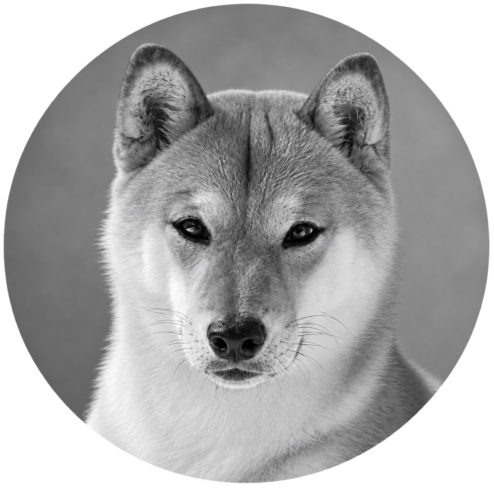

The part that
doesn't get automated.
AI speeds up my research, wireframes, and code — so the hours I save go into clarity, taste, and the decisions that shape the product.
I'm a Product Designer with 5+ years of experience building interfaces for complex, data-heavy products — most recently at Prescouter, where I design AI-driven UX for enterprise workflows. But I don't stop at the mockup. I design and vibe-code the front end, work closely with developers, PMs, and QA through to deployment, and ship through GitHub.
I care about how the work looks, but just as much about how it functions, how it scales, and whether it actually moves the business forward.
not AI-generated
AI moves fast, but the people using what I build still need something that feels considered — clear, trustworthy, and built for how they actually work. That's the part that doesn't get automated.
AI isn't a gimmick I bolt on — it's built into how I work, every week: research and synthesis, copy exploration, wireframe exploration, dev support, QA, documentation, and process automation. It's there to speed up the parts of the process that should move faster, so I can spend more time on the parts that actually need judgment.
Research
Notes, competitor patterns, and messy product context — synthesized into something actionable.
Copy + messaging
Positioning, structure, and content direction.
UX + concepting
Flows, structure, and early product directions in Figma.
Dev acceleration
Prototyping, debugging, and repetitive front-end work — shipped through GitHub.
QA + ops
Reviews, documentation, and process automation.
Every project is different, but the rhythm is usually the same: get clear, move fast, build properly, then tighten until it's ready for the real world.

(Nori approves of this message from his curled-up spot nearby)be interested in
UX audits for SaaS startups
A focused review of your product's experience — friction points, conversion blockers, and concrete recommendations.
Mentoring for junior designers
Portfolio feedback, breaking into the industry, and early-career questions. Free, as time allows.